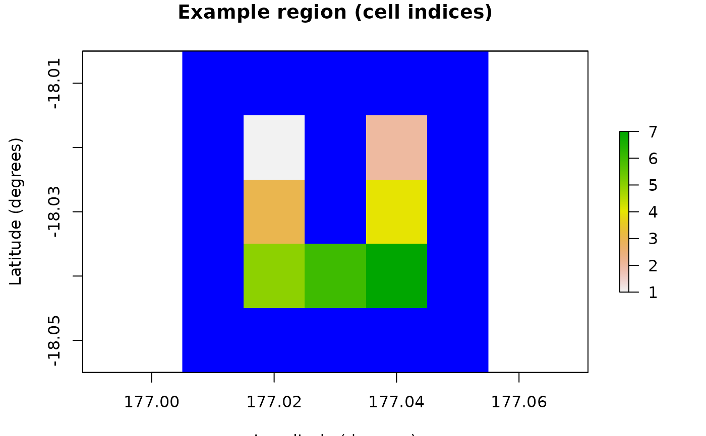
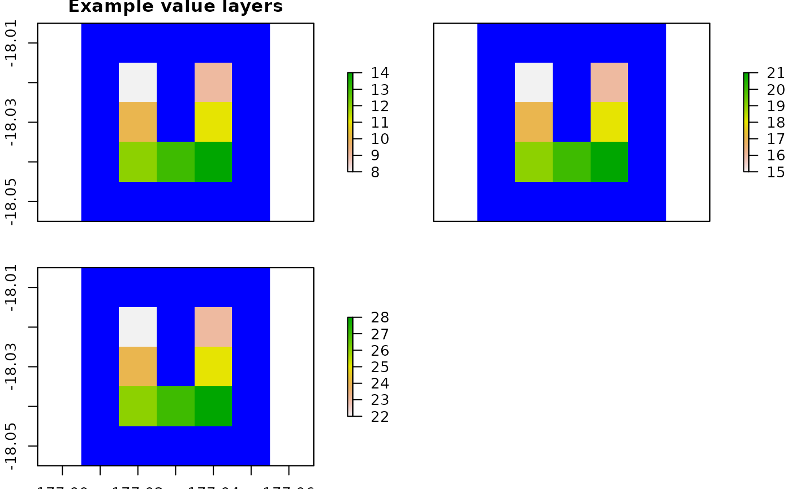

R6 class representing a study region of spatial grid cells
defined via a list of longitude/latitude cell coordinates (WGS84), or a
RasterLayer object (see raster).
Super class
poems::GenericClass -> Region
Active bindings
coordinatesData frame (or matrix) of X-Y population (WGS84) coordinates in longitude (degrees West) and latitude (degrees North) (get and set), or distance-based coordinates dynamically returned by region raster (get only).
region_rasterA RasterLayer object (see
raster) defining the region with finite values (NAs elsewhere).use_rasterBoolean to indicate that a raster is to be used to define the region (default TRUE).
strict_consistencyBoolean to indicate that, as well as resolution, extent and CRS, consistency checks also ensure that a raster's finite/occupiable cells are the same or a subset of those defined by the region (default TRUE).
region_cellsDynamically calculated number of region coordinates or raster cells with finite/non-NA values.
region_indicesDynamically calculated region indices for raster cells with finite/non-NA values (all if not a raster).
Methods
Inherited methods
Method new()
Initialization method sets coordinates or raster for region.
Usage
Region$new(
coordinates = NULL,
template_raster = NULL,
region_raster = NULL,
use_raster = TRUE,
...
)Arguments
coordinatesData frame (or matrix) of X-Y coordinates (WGS84) in longitude (degrees West) and latitude (degrees North).
template_rasterA RasterLayer object (see
raster) defining the region with example finite values (NAs elsewhere)region_rasterA RasterLayer object (see
raster) defining the region with finite cell indices (NAs elsewhere).use_rasterBoolean to indicate that a raster is to be used to define the region (default TRUE).
...Additional parameters passed individually.
Method raster_is_consistent()
Returns a boolean to indicate if a raster is consistent with the region raster (matching extent, resolution, and finite/NA cells).
Arguments
check_rasterA RasterLayer, RasterStack or RasterBrick object (see
raster) to check for consistency with the region raster.
Method raster_from_values()
Converts an array (or matrix) of values into a raster (or stack) consistent with the region raster (matching extent, resolution, and finite/NA cells).
Examples
# U Island example region
coordinates <- data.frame(
x = rep(seq(177.01, 177.05, 0.01), 5),
y = rep(seq(-18.01, -18.05, -0.01), each = 5)
)
template_raster <- Region$new(coordinates = coordinates)$region_raster # full extent
template_raster[][-c(7, 9, 12, 14, 17:19)] <- NA # make U Island
region <- Region$new(template_raster = template_raster)
raster::plot(region$region_raster,
main = "Example region (cell indices)",
xlab = "Longitude (degrees)", ylab = "Latitude (degrees)",
colNA = "blue"
)

region$region_cells
#> [1] 7
region$coordinates
#> x y
#> 1 177.02 -18.02
#> 2 177.04 -18.02
#> 3 177.02 -18.03
#> 4 177.04 -18.03
#> 5 177.02 -18.04
#> 6 177.03 -18.04
#> 7 177.04 -18.04
# Generate value layers
value_brick <- region$raster_from_values(array(8:28, c(7, 3)))
raster::plot(value_brick,
main = "Example value layers",
xlab = "Longitude (degrees)", ylab = "Latitude (degrees)",
colNA = "blue"
)

value_brick[region$region_indices]
#> layer.1 layer.2 layer.3
#> [1,] 8 15 22
#> [2,] 9 16 23
#> [3,] 10 17 24
#> [4,] 11 18 25
#> [5,] 12 19 26
#> [6,] 13 20 27
#> [7,] 14 21 28